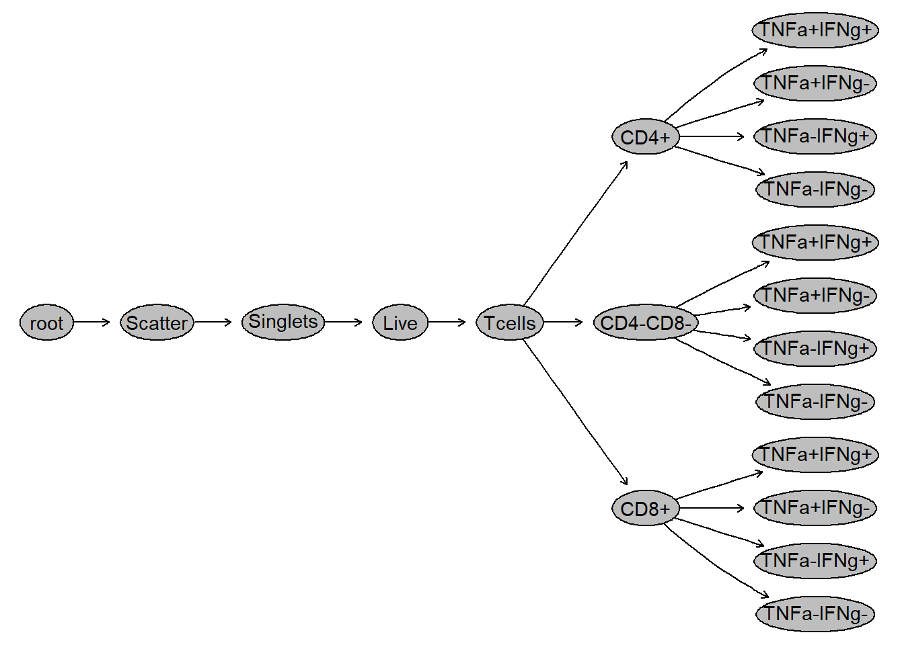
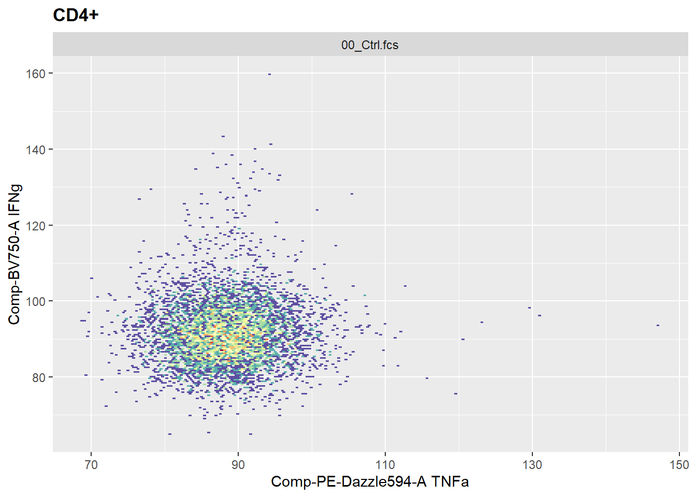
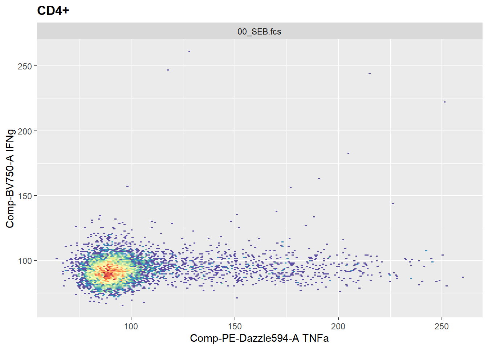
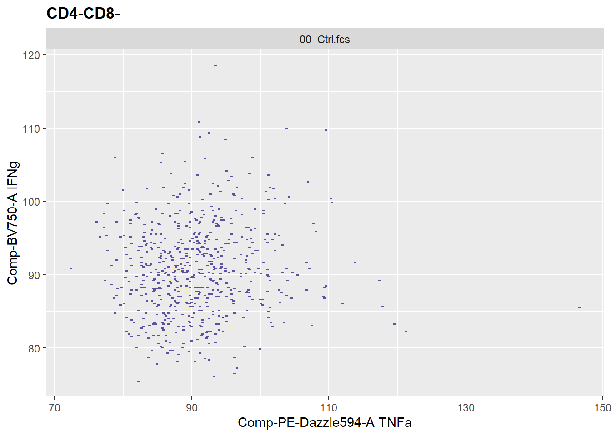
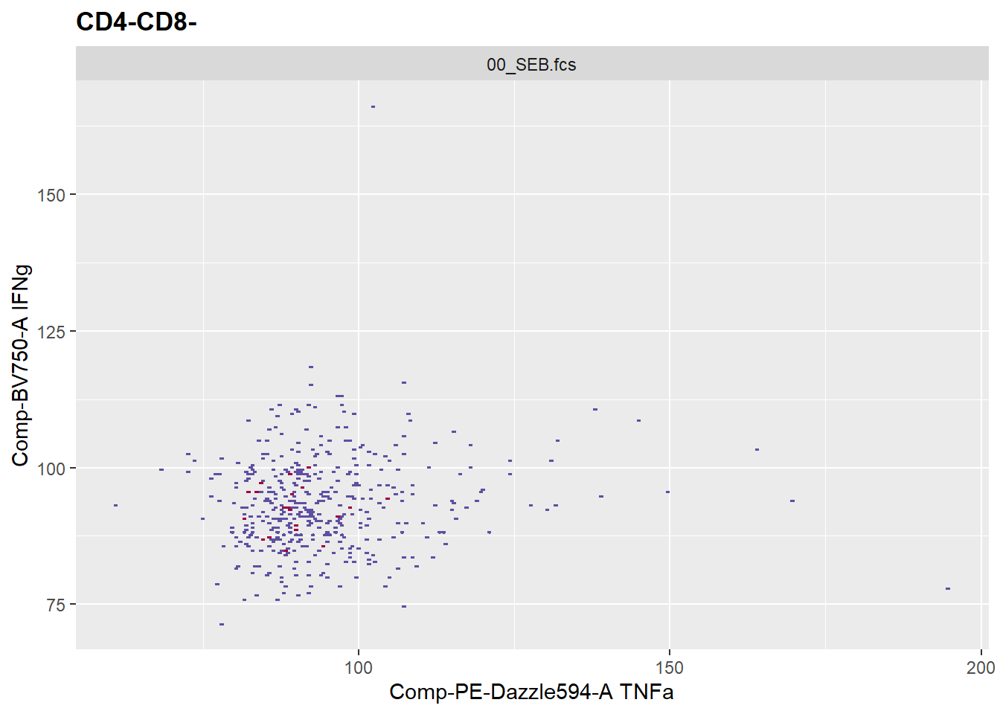
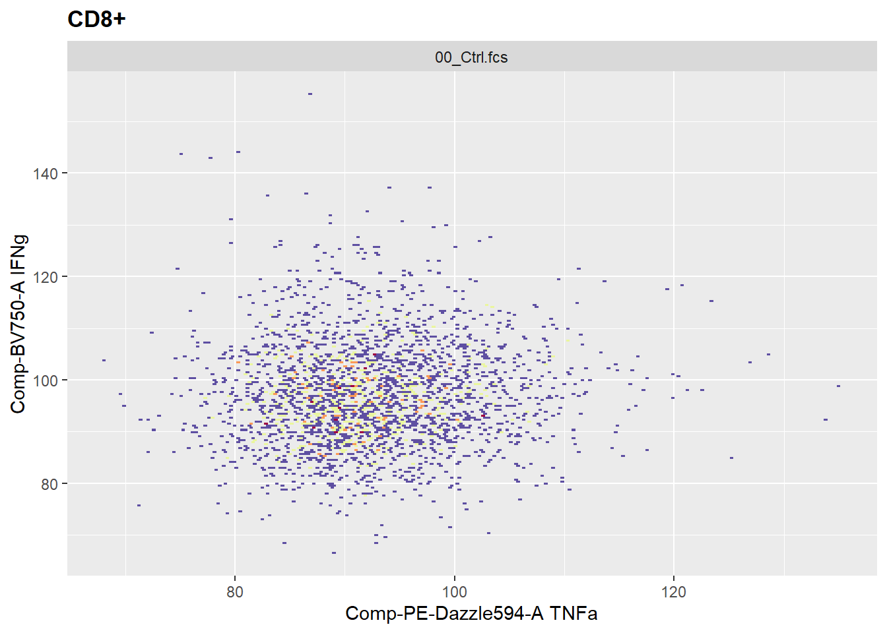
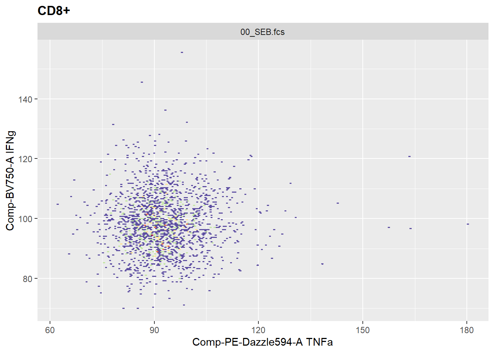

Heads up: first time creating a Quarto Markdown file! Even tried to insert an image, let’s see how it looks. Pretty cool course so far, by the way :)
Importing libraries
library(flowCore)library(flowWorkspace)
As part of improvements to flowWorkspace, some behavior of
GatingSet objects has changed. For details, please read the section
titled "The cytoframe and cytoset classes" in the package vignette:
vignette("flowWorkspace-Introduction", "flowWorkspace")
── Conflicts ────────────────────────────────────────── tidyverse_conflicts() ──
✖ dplyr::filter() masks flowCore::filter(), stats::filter()
✖ dplyr::lag() masks stats::lag()
ℹ Use the conflicted package (<http://conflicted.r-lib.org/>) to force all conflicts to become errors
Problem 1. Using what you learned last week in Introduction to Tidyverse, for the imported GatingSet, retrieve the data.frame from cell counts per gate and attempt to mutate a new column showing percent of the parent gate. Remember, this is intentionally tricky at this point, we will go over how to efficiently do this in a few weeks
Problem 2. As we saw, CytoML can be finicky when names are repeated, or .fcs files are not present. Try removing a couple of the .fcs files from the data folder, and re-run the code. Document what kind of errors result.
After removing two of the files, I get this warning message, but the code actually runs fine.
Problem 3. For ggcyto, attempt to generate plots to visualize TNFa and IFNg for the various cell populations, across both Ctrl and SEB samples. In the process, change the bins argument until you end up with a resolution that you would be happy with for your own plots, and write it down
We first plot the gating hierarchy.
plot(gs)

Now we plot the CD4+ one control and one SEB sample
ggcyto(gs[2], subset ="CD4+", aes(x ="TNFa", y ="IFNg")) +geom_hex(bins =200)

ggcyto(gs[6], subset ="CD4+", aes(x ="TNFa", y ="IFNg")) +geom_hex(bins =200)

See how SEB induces TNFa expression. Now, we can do the same for the other populations
ggcyto(gs[1], subset ="CD4-CD8-", aes(x ="TNFa", y ="IFNg")) +geom_hex(bins =200)

ggcyto(gs[6], subset ="CD4-CD8-", aes(x ="TNFa", y ="IFNg")) +geom_hex(bins =200)

ggcyto(gs[1], subset ="CD8+", aes(x ="TNFa", y ="IFNg")) +geom_hex(bins =200)

ggcyto(gs[6], subset ="CD8+", aes(x ="TNFa", y ="IFNg")) +geom_hex(bins =200)

In terms of resolution, I have chosen bins = 200 as a good resolution value, although populations with lower counts (like control CD4-CD8-) might look better with lower values.